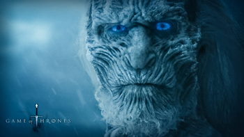

1 / 5
2 / 5
3 / 5
4 / 5

5 / 5

... Crecer Fuerte ...
... Nuestra es la Furia ...
... Oye mi Rugido ...
... Fuego y Sangre ...
... Se Acerca el Invierno ...
La Fe de los Siete, la religión predominante y oficial de los Siete Reinos, que venera un dios con siete aspectos.
"La sangre de los Primeros Hombres todavía fluye por las venas de los Stark, y se aferran a la creencia de que el hombre que dicta la sentencia debe blandir la espada."
“La mente necesita libros como la espada necesita una piedra de afilar si quiere mantener su agudeza. Por eso leo tanto, Jon Snow"
|
Poniente es el continente en el que se desarrolla principalmente la historia. La mayor parte de este continente pertenece a los Siete Reinos, una nación soberana que se compone realmente de 9 regiones (el Norte, las Tierras de los Ríos, las Islas del Hierro, el Valle, el Occidente, las Tierras de la Corona, el Dominio, las Tierras de Tormentas y Dorne) cada una con sus respectivos señores feudales, de los cuales uno es el guardian o señor principal de la región y los demás señores son sus vasallos. Además de los siete reinos existe una larga extensión de tierra helada en el extremo norte del continente más allá del Muro. |
Essos se encuentra al este de Poniente y al norte de Sothoryos. Conecta al norte con el Mar de los Escalofríos y al sur con el Mar del Verano y el Mar de Jade. Debido a su extensión, el continente presenta un clima muy variable, siendo más caluroso en el sur y el centro, y más frío en el norte. Culturalmente es también muy distinto entre sí, por un lado, el occidente se ve influenciado por el legado del Feudo Franco de Valyria. En el centro destaca el inmenso Mar Dothraki, lugar de interminables planicies y llanuras donde habitan los khalasars Dothrakis, incluyendo la única ciudad Dothraki, Vaes Dothrak. La zona oriental de es la más desconocida debido a que apenas está cartografiada. |
Ibben es un archipiélago situado en el Mar de los Escalofríos, en la costa norte del continente de Essos. Su capital es la ciudad de Puerto de Ibben, situada en la mayor isla del archipiélago, Ib. El archipiélago de Ibben está formado por varias islas, siendo la mayor de ellas, con diferencia, la isla de Ib, donde se ubica Puerto de Ibben. Las otras islas son de pequeño tamaño. Ibben también fundó algunas colonias en el continente de Essos, como Nueva Íbica. Ibben es regida por el Consejo de la Sombra, elegidos por el consejo de los Mil. |
Newsletter
|